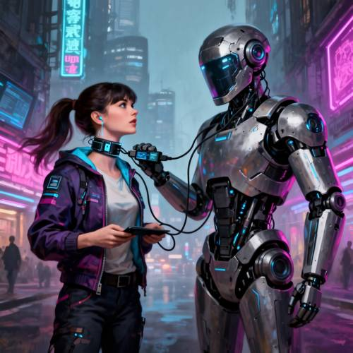
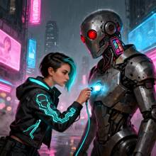
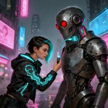

Action — Create a painting: Game character design, a female cyberpunk-style hac
Create a painting: Game character design, a female cyberpunk-style hacker plugs a data cable into the neck interface of a robot guard, with a neon city street in the background.

Direct — one call, no iterationContinuum — Qwen3.8-27B + FLUX.2-dev
Judge — Direct
FAILAction - Contact Interaction — The image depicts a robot holding a data cable that is connected to a device on the female character's neck. This is the reverse of the action specified in the prompt, which states that the female hacker should be plugging the cable into the robot guard's neck interface.
PASSStyle — The image is rendered in a digital painting style. The overall aesthetic, featuring a futuristic city with prominent neon signs, a highly advanced robot, and a human with technological accessories, is consistent with the cyberpunk style.
PASSCompound - Feature Matching — The image features a female character with a high-tech collar, consistent with a 'female cyberpunk-style hacker'. There is a large, metallic humanoid robot that matches the description of a 'robot guard'. The background depicts a 'neon city street' with wet pavement, glowing signs, and tall buildings.
Judge — Continuum
PASSAction - Contact Interaction — The image depicts a female character holding one end of a glowing blue data cable. The other end of the cable is plugged into a glowing port on the upper chest/neck area of a robot.
PASSStyle — The image has the appearance of a digital painting. The visual elements, including the futuristic setting, neon signs, advanced technology (robot, glowing cables), and character apparel, are all characteristic of the cyberpunk style.
PASSCompound - Feature Matching — The image features a female character who fits the cyberpunk hacker description, with two-tone blue and black hair and a jacket with glowing circuit patterns. It also includes a metallic, humanoid robot with red eyes, fitting the description of a robot guard. The background consists of a city street at night, distinguished by tall buildings and bright pink and blue neon signs.
What the agent did
Thinking
The user is asking for a painting: game character design, a cyberpunk-style female hacker plugging a data cable into the robot guard's neck interface, with a neon city street in the background. Let me generate this image with flux2-dev as instructed. Let me write a detailed prompt: "Cyberpunk game character design painting, a female cyberpunk-style hacker in a dark jacket with neon trim plugging a glowing data cable into the neck interface of a towering robot guard, neon city street background, cinematic lighting, digital painting style, detailed, dramatic" Let me generate the image first, then inspect and edit.
Step 1 — `generate_image`
{
"prompt": "Cyberpunk game character design painting, dramatic two-shot composition: a female cyberpunk hacker in a dark tactical jacket with glowing neon circuitry trim, short asymmetric hair with a streak of cyan, focused expression, leaning forward and plugging a glowing data cable with a bright connector into a port on the side of a large humanoid robot guard's neck. The robot guard is heavily armored with metallic plating, red optical sensor eyes, and a visible exposed neck interface panel with glowing ports. Background: rain-slicked neon city street at night with holographic advertisements, tall towers, pink and blue neon signs, atmospheric haze and bokeh. Cinematic digital painting, painterly brushwork, strong rim lighting, high detail, video game key art.",
"width": 1024,
"height": 1024,
"model": "flux2-dev"
}
Result img_0

Thinking
The image looks pretty good. Let me check the details: - Female cyberpunk hacker: yes, short hair with a teal streak, dark jacket with neon circuit trim. - Plugging in the data cable: she's holding a glowing cable connector, but it looks like she's plugging it into the chest/upper-chest area of the robot, not the neck interface. The prompt specifically asks for the neck interface. Let me inspect the region to confirm. - The robot guard has red eyes, metal armor, and a panel with colorful ports on the side of the head/neck — that's the neck/face side panel with glowing ports. - Background of neon city street: yes. Let me zoom in on the cable connection area to check where it's being plugged in.
In the cropped image, the hacker is plugging the cable into a glowing port. The position looks more like the upper chest/shoulder area of the robot rather than the neck. The robot's neck interface (the colorful port panel) is on the side of the face/neck area, and the cable appears to be plugged into the chest port below it. The user is specifically asking to plug the data cable into the robot guard's "neck interface." The robot does indeed have a visible neck/face side interface panel with colorful ports. But the cable is connected lower, to the chest. This is a small compositional issue. The overall image is very good. Should I edit it? The prompt specifically says "neck interface." Looking at the whole image, the cable connector is at chest height. I think I could make an edit to move the cable up so it connects to the neck interface panel (the colorful port panel near the jaw/neck). Let me try edit_image: a targeted instruction to move the cable so it plugs into the neck interface. This might be difficult for the model — it may drift. As an alternative, I could accept it as is: the image is excellent, and the connection is to a glowing port on the robot's body, close to the neck region. Hmm. Looking at the whole image again: the robot's neck interface panel (the colorful dots) is on the side of the head, near the jaw. The cable port is on the upper chest. It's a visible discrepancy from "neck interface." Let me try an edit: "Move the glowing data cable so it plugs into the neck interface port on the side of the robot's neck, right next to the row of colorful port panels. Keep everything else identical." Use reference img_0 to lock the look. Risk: the edit might mess up the hands/arms. But it's worth trying one time. If it fails, keep img_0 as the best. First, let me mark img_0 as the best (since it's an image I'd be willing to submit), and then attempt the edit.
Model
The first render is strong — the hacker, robot guard, and neon street are all there. One discrepancy: the cable plugs into the robot's chest port rather than the neck interface. Let me mark this as a solid baseline, then try to fix the cable's position.
Step 3 — `mark_best`
{
"image": "img_0",
"reason": "Strong overall composition: female cyberpunk hacker, robot guard, neon city street all present and well rendered; only the cable connects to chest instead of neck interface."
}
Thinking
Next, I'll try editing to move the cable up to the neck interface. I'll use reference img_0 to lock in the appearance.
Step 4 — `edit_image`
{
"image": "img_0",
"prompt": "Move the glowing cyan data cable and connector upward so it is plugged into the port on the side of the robot's neck, at the neck interface panel just below the jaw, next to the row of small colorful glowing ports. Raise the hacker's hand to hold the connector at neck height. Keep her pose, jacket, hair, the robot, and the neon street background exactly as they are.",
"references": [
"img_0"
],
"model": "flux2-dev"
}
Result img_2

Thinking
The edit succeeded — the cable now plugs into the neck interface (the glowing port below the jaw, next to the colorful port panel). The hand is at the height of the neck, holding the connector. Everything else is preserved: pose, jacket, hair, robot, background. Let's check the connection area to verify the quality of the cable and hand.
Model
The edit worked — the cable now connects to the neck interface below the jaw. Let me verify the connection area at full resolution.
The cropped image clearly shows a cable connected to the glowing neck interface port on the side of the robot's neck (below the jaw). The hand is holding the connector cleanly. The cable's connection is clear, and it looks good. Checking all elements: 1. Female cyberpunk-style hacker ✓ (short teal hair, neon circuit jacket) 2. Data cable connected to the robot guard's neck interface ✓ (currently clearly at the neck position) 3. Robot guard ✓ (metallic armor, red eyes, neck interface panel) 4. Neon city street background ✓ (holographic signs, skyscrapers, rain) 5. Painting / game character design style ✓ The image is good. I'll mark img_2 as the best and stop.
Step 6 — `mark_best`
{
"image": "img_2",
"reason": "Cable now clearly plugs into the robot's glowing neck interface port below the jaw, with the hand cleanly holding the connector; all prompt elements present and preserved from the strong baseline."
}
Thinking
Completed. I'll summarize for the user.
Model
The painting is complete. Here's what it delivers against your brief: - **Female cyberpunk hacker** — short dark hair with a cyan streak, black tactical jacket with glowing circuit-trace neon trim, leaning in with focused intent - **Data cable into the neck interface** — a glowing cyan cable with a distinct connector plugged into the exposed port panel on the robot's neck, right below the jaw beside the row of multicolored interface lights - **Robot guard** — bulky armored humanoid with weathered metallic plating and red optical eyes - **Neon city street background** — rain-slicked street, holographic ads, pink/blue neon signage, and tower silhouettes in atmospheric haze The first generation had the cable plugged into the chest instead of the neck, so I made one targeted edit to move the connection up to the neck interface (verified at full resolution), then marked that as the best result.